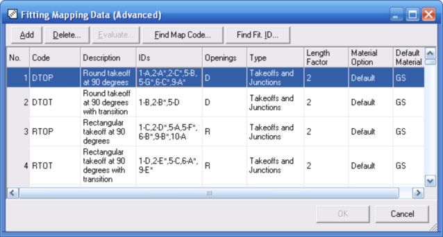

Fitting Mapping Data (Advanced) (Bill of Materials - General Menu) |
  
|
Fitting Mapping Data (Advanced) (Bill of Materials - General Menu) |
|
If you want to change the default mapping of Manual D fittings to Bill of Materials fitting parts, click the menu "Bill of Materials General | Fitting Mapping Data (Advanced)." The dialog pictured below will open. As indicated by the word "Advanced," this feature is for advanced users.

This dialog lets you change the mapping that is used to define the parts that get generated whenever Manual D fittings are encountered on your drawing.
Add: Adds a new row at the bottom of the list.
Delete: Deletes the current row.
Evaluate: Evaluates the list and reports any errors encountered. Any errors must be corrected before the program will accept any changes you have made on this dialog.
Find Map Code: Lets you enter a map code for which to search. If the map code is found its row will be highlighted.
Find Fit. ID: Lets you enter a fitting ID for which to search. If the ID is found its row will be highlighted.
No. (column): Shows the number of the current row.
Code (column): Each Manual D fitting is mapped to a particular fitting map code, shown in the Code column in the above picture. For example, you can see in the above picture that Manual D fitting 1-E is mapped to fitting map code RTOT. That means that whenever the automatic takeoff encounters a 1-E fitting on the drawing it will add a part that includes the text "RTOT" within the part ID, and the part description will include the description shown in the above picture for the RTOT fitting map code.
Description (column): This column lets you change the text that will be used for fitting parts that are generated and added to your database as a result of the automatic takeoff. Changing this text will not affect fitting parts that are already in your database.
IDs (column): Specifies the list of Manual D fitting IDs that will be mapped to the fitting map code in the Code column. You can use an asterisk as a wildcard to include several fitting IDs. For example, the 2nd row in the above picture includes "2-B*" in the IDs column. That means that all Manual D fitting IDs that begin with "2-B" will be mapped to fitting map code DTOT.
Openings (column): The Opening Code for a fitting represents the number of possible unique inlet and outlet sizes and their shapes, and is used to generate unique IDs for fitting parts as they are added to the database. The letter R is used for rectangular opening and D is used for a round opening. The letter X is used to indicate that nothing specific about the openings should be included.
For example, a simple rectangular elbow fitting would have an opening code of R to indicate that only one opening size is possible and that the opening is rectangular. A round tee fitting might have an opening code of DD to indicate that only two possible opening sizes are possible (one outlet equals the inlet size). Another round tee might have an opening code of DDD to indicate that all three openings may be of different sizes.
Type (column): Specifies the category to which the current fitting map code belongs. The category is used to determine the way the fitting parts with the current fitting map code are handled under certain circumstances.
Length Factor (column): This value is used to determine the approximate area of a fitting part in order to automatically assign cost data using the Auto Cost feature. It specifies the approximate total length of each branch of the fitting as a multiple of the average opening diameter (or equivalent diameter if an opening is rectangular). For example, if a simple round elbow fitting's length from inlet to outlet is approximately equal to twice the fitting's diameter, that fitting's Length Factor would be 2. Or if a rectangular tee included branches that have an approximate total length that equals three and a half times the average equivalent diameter of its openings, that fitting's Length Factor would be 3.5.
Note that you can change the calculated area of a fitting part once it has been added to the database. The Length Factor is only used when a fitting part is first being added to the database during the automatic takeoff.
Material Option (column): This input specifies the option you want to use for this fitting's material regarding how and whether a part for it gets added to the project bill of materials. The choices are:
·Default |
Use the default material specified for this fitting. |
·Duct |
Use same material as that of the duct (unless flex). |
·None |
Do not add this fitting to the project bill of materials. |
Default Material (column): This value is used to determine the material to use when the Material Option input is set to Default.
OK: Saves your changes and closes this dialog. If there are any errors the program will not accept your changes and will instead show you a list of the errors encountered. You must correct all errors for the program to accept your changes on this dialog.
Cancel: Closes this dialog without saving any changes to your database.